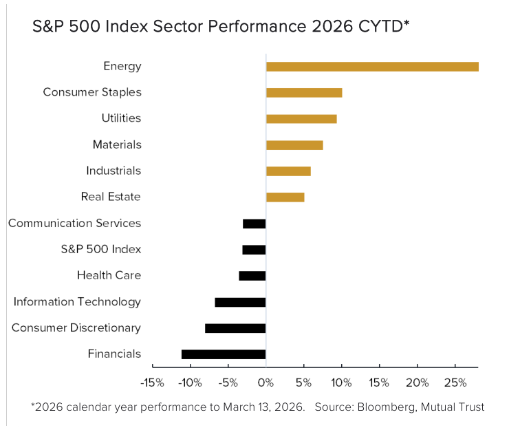
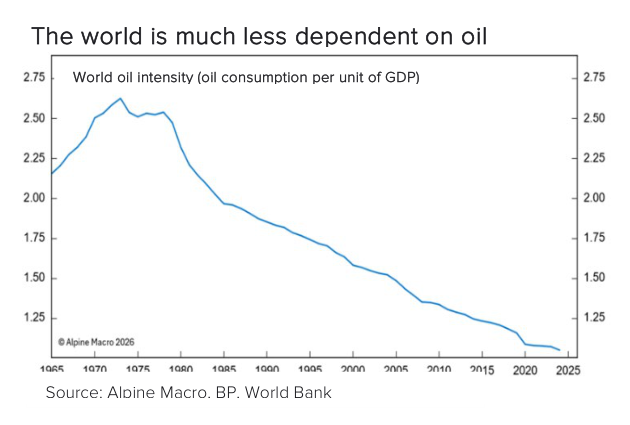
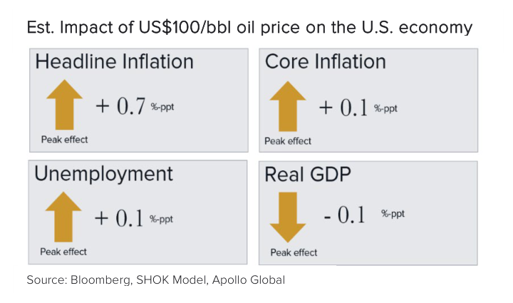
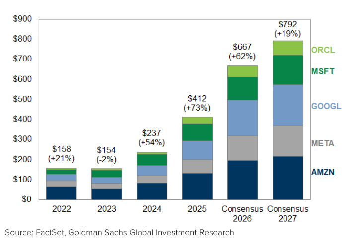
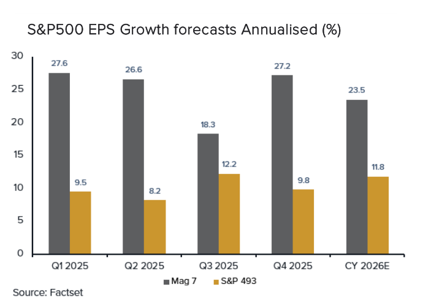
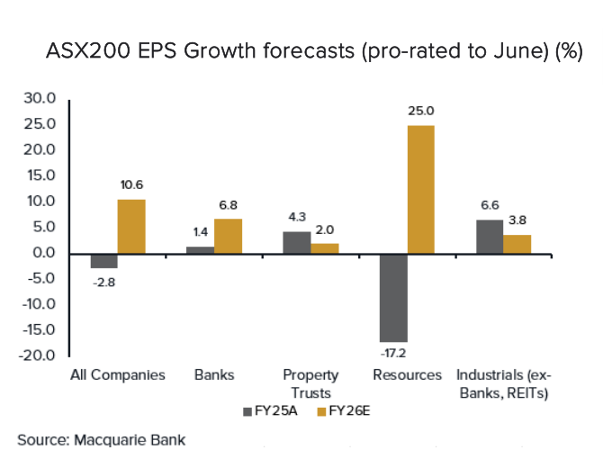
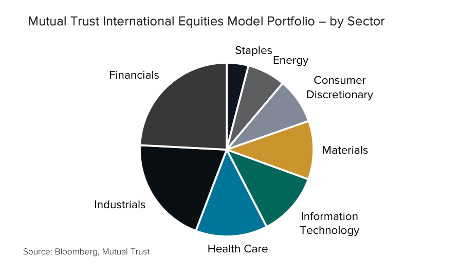

Meaningful shifts are occurring in equity markets. Layers of
crosscurrents are at play -- amplified by the conflict in Iran. Oil
prices have risen sharply, lifting near-term inflationary
expectations and prompting more hawkish tones from central banks.

At the same time, concerns around AI -- both monetisation of
capex and the potential for industry disruption -- triggered a
sharp pullback in related sectors in early 2026, most notably
software. In contrast, traditional “old economy” industries have
re-emerged, benefiting from reaccelerating growth and a
perception of lower disruption risk. A sharp rotation across
sectors has occurred -- with the U.S. industrials sector now
trading at a higher valuation than information technology. Where
to from here?
In this Quarterly Outlook, we focus on equities, addressing four
questions:
What are the economic implications if the Iran conflict drags
on?
Is the economic backdrop still supportive for equities?
Are company earnings holding up?
How are Mutual Trust equity portfolios positioned?
The tug of war between the market’s vulnerabilities and resilience
underscores the importance of thoughtful portfolio construction,
diversification and avoiding concentrated bets on any single
outcome. Uncertainty is high and the range of plausible paths
continues to widen.
Periods of market turbulence are a normal feature of investing
and, while unsettling, often create opportunity. Our portfolios
maintain exposure to risk assets while being positioned to be
resilient and flexible in a more volatile investment environment
with multiple risks.
Whilst our base case remains that equities will benefit from
reaccelerating global growth, stimulatory policy tailwinds and
robust earnings expansion, we are closely monitoring developments
in the Middle East. A prolonged escalation remains the key risk to
our otherwise positive outlook.
The economic implications of a drawn-out conflict -- higher
inflation, higher rates, slower growth
A prolonged conflict in Iran that results in sustained oil supply
constraints materially increases the risk of a higher-inflation,
higher-rates and a lower-growth global environment. Prolonged
disruption is particularly challenging for oil-import dependent
economies such as China, India, Japan and Europe. For investors,
the unknown variable is duration.
The impact to growth depends upon both the duration and scope of
the conflict. Instability around the Strait of Hormuz, which
carries roughly 20% of global oil supply, has already driven sharp
- though volatile - increases in oil and gas prices. Iran’s new
supreme leader, Mojtaba Khamenei, has vowed to keep the Strait
closed, signifying prolonged supply disruption. Brent crude oil
prices almost doubled in the second week of the conflict, reaching
nearly US$120 a barrel before retreating to around $100 a barrel
currently. While policy measures - such as strategic reserve
releases - may offer short-term relief, physical supply
constraints still mean that duration remains critical.
If elevated energy prices persist for months rather than weeks,
the macro-economic effects become more pronounced. Higher oil
prices feed directly into inflation and indirectly into weaker
growth, with the impact varying significantly across countries.
The U.S. economy is far less vulnerable to oil price shocks than
in previous decades. According to Alpine Macro, crude oil
consumption relative to real U.S. GDP is around 60% lower than in
the 1970s. This reflects improved energy efficiency and the
growing dominance of the services sector. Importantly, since 2019,
the U.S. has been a net exporter of oil and refined products,
partially decoupling oil prices from GDP and providing greater
insulation compared to many European and Asian economies that
remain reliant on energy imports.
Nonetheless, oil remains a critical input across the supply chain.
Higher prices are inflationary and will be reflected in higher
costs for petrol, transportation, utilities, fertilisers, airfares
and other energy-linked inputs costs.
Estimates of the macro-economic impact vary. Apollo Global
Management estimates that if oil prices were sustained at US$100
through 2026, it would lift U.S. headline inflation by 0.7
percentage points at its peak, while reducing real GDP by
approximately 0.1 percentage point. This would reverse recent
progress in paring back inflation (CPI 2.4% in February) and
complicate the Federal Reserve Board’s (Fed) dual mandate of
balancing inflation against any labour market softness. Reflecting
these risks, markets have pushed expectations for the next Fed
rate cut back to December (from June).
Australia is not immune -- importing about 90% of its liquid fuel
including petrol, diesel and aviation fuel, according to research
by The Australia Institute. Inflation expectations jumped to a
three-year high in the second week of the Iran conflict, with the
ANZ-Roy Morgan consumer confidence survey showing weekly inflation
expectations increased 0.8 percentage point to 6.1%, the largest
weekly rise since the survey began in 2010. With headline
inflation still elevated (3.8% in January), additional
energy-driven pressures increase the likelihood of further
tightening by the Reserve Bank of Australia (RBA). Markets are now
pricing around 69 basis points of tightening during 2026, with a
68% probability of a rate increase at the RBA meeting on 16-17
March.


Elsewhere, a prolonged oil supply disruption poses greater
challenges for energy-import-dependant economies including China,
India, Japan and Europe. If fiscal support is delayed, the
environment could rapidly shift from reflationary to
stagflationary.
A supportive economic backdrop, for now
The global economic backdrop remains broadly constructive, with
the core drivers of growth still intact. If geopolitical tensions
stabilise, there is scope for further upside in the U.S.,
supported by upgraded AI-related investment and potential
tailwinds from easing tariffs.
The IMF forecasts 3.3% global growth for 2026 and 3.2% for 2027,
both revised slightly higher since October 2025. Growth is
supported by accommodative financial conditions, fiscal measures
and continued AI-related investment (refer
A glass half full). In the U.S:
Fiscal policy remains a tailwind. The Trump administration’s
industrial and tax policies, fiscal spending and deregulation
agenda support growth in 2026. The One Big, Beautiful Bill Act
(OBBBA) delivers front-loaded stimulus, concentrated in the
first half of 2026 before tapering. Deutsche Bank estimates the
OBBBA will generate US$60 to $100 billion in additional tax
refunds in the first half of 2026, alongside approximately $125
billion in consumer tax cuts over the full year. If the Brent
crude oil price remains at US$100 a barrel, this stimulus would
more than offset the impact drag from higher petrol prices.
However, oil at $150 a barrel would likely overwhelm these
OBBBA benefits and pose a more serious threat to the outlook.

AI related- capital expenditure continues to accelerate.
Mega-cap technology companies upgraded capex guidance again at
their recent results. The top five U.S. hyper-scalers
(Microsoft, Meta, Amazon, Oracle, Alphabet) are now projected
to spend approximately US$667 billion in capex in 2026, a 62%
increase from 2025. This investment cycle is a powerful driver
of economic growth, with spill-over benefits across
construction, energy, commodities and industrial sectors.
Recent Regional Fed surveys also point towards rising capex
intentions among manufacturers as expectations for orders and
production to improve into 2026.
Trade policy may shift from headwind to tailwind. While
uncertainty remains, tariff effects could prove supportive in
2026. The temporary 10% Section 122 tariffs are scheduled to
expire after 150 days (in July 2026), absent of alternative
policy action. The Trump administration announced on 13 March
that under Section 301 of the Trade Act they are undertaking
trade investigations into China, Mexico, the EU and more than a
dozen other economies in an effort to replace reciprocal
tariffs, if those nations are found to have engaged in unfair
trade practices. However, even if successful, it is unlikely the
total tariffs will reach the aggregate level of those in 2025.
In Australia, momentum continues to build as the economy moves
through the early stages of a cyclical upswing, led by fiscal
stimulus and a recovery in private sector spending. This has led
to a labour market that is more resilient and inflation more
persistent than the RBA’s forecasts. As such, unless productivity
improves, further rate hikes by the RBA are expected in 2026.
Company earnings resilient, with continued growth in 2026
The earnings backdrop remains fundamentally supportive for
equities, underpinned by reaccelerating global growth. In both the
U.S. and Australia, earnings breadth is improving whilst revenue
trends remain healthy despite policy and geopolitical uncertainty.
Sustained higher oil prices remain the key risk to this momentum.
U.S. corporate earnings continue to demonstrate resilience and are
well positioned for growth in 2026. Companies have adapted
effectively to geopolitical and tariff related uncertainties in
2025, with circa 77% of companies beating EPS estimates over the
four quarters in the year -- above the 10-year average of 75%.
Mega-cap technology companies continue to report strong earnings
and healthy margins. However, concerns around AI -- particularly
capex monetisation and industry disruption -- triggered a sharp
pullback in related sectors in early 2026. All Magnificent 7
companies are trading lower year-to-date (to varying degrees),
while the U.S. software sector is down around 30% from its 2025
highs. Notably, the sector’s 12 month-forward PE ratio has fallen
below its 30-year average.
Fiscal tailwinds are supporting a broader set of industries,
driving renewed earnings growth in previously subdued parts of the
market. “Old-economy” sectors are resurging. Capital intensive
“heavy asset, low obsolescence” (HALO) exposures have benefited
from a renewed focus on structural necessity. These businesses --
reliant on physical infrastructure such as pipelines, power grids,
railroads, machinery and factories -- typically offer long asset
lives, pricing power and more resilience to AI-disruption than
asset-light sectors such as software.
Looking ahead, markets are forecasting double-digit earnings
growth for the S&P500 Index in 2026: 23.5% growth for the
Magnificent 7 and 11.8% for the remaining 493 companies, according
to FactSet. Global manufacturing indicators have improved over the
last three months, with U.S. new orders growth strengthening and
inventories rising modestly. If sustained, this should support
positive earnings revision momentum.
In Australia, the recent reporting season exceeded expectations,
delivering the strongest earnings season in three years, led by
banks and resources (around half of the ASX200 Index). Earnings
beats outnumbered misses by roughly 2.4 to 1, with the skew more
pronounced across large caps. However, share prices were volatile
and unforgiving for disappointments.
Earnings expectations have strengthened as corporates benefit from
Australia’s cyclical upswing. ASX 200 earnings are forecast to
grow around 10.6% in FY26 (from -2.8% in FY25 and -4.8% in FY24),
marking the strongest expansion since FY22. Growth is expected to
broaden across sectors, led by resources (+25.0%), followed by
banks (+6.8%), and then industrials (+3.8%). While less pronounced
than earlier cycles, the trajectory signals a clear return to
healthier earnings momentum.


Equity positioning favours broader parts of the economy
Improving market breadth and higher volatility are creating select
opportunities for long-term investors. Whilst our base case
remains for equities to benefit from reaccelerating global growth,
stimulatory policy tailwinds and robust earnings expansion, we are
closely monitoring developments in the Middle East -- the key risk
to our otherwise sanguine outlook. Mutual Trust equity portfolios
are leveraged to the broader economy, with positions in materials,
energy, consumer staples and industrials.
At the headline level, equity markets have held up well. The
S&P500 Index is down just 2.3% calendar year-to-date (to 16
March), while the ASX200 Index is 1.7% lower. However, these
aggregate figures mask significant dispersion beneath the surface.
Early 2026 has been characterised by a clear rotation across
sectors.
After several years of narrow leadership driven by U.S. meg-cap
technology companies, market leadership has broadened. Energy,
materials and industrials have been among the strongest performers
year-to-date, benefiting from a rotation away from information
technology and communication services. Old-world over new-world.
The rotation has been pronounced, with the U.S. industrials sector
now trading at a higher PE valuation than the Information
Technology sector.

Our Australian and international equity portfolios are well
diversified and have benefited from this rotation through
exposure to capital intensive, economically essential sectors.
Based on valuation and earnings support, our preferred equity
exposures include materials (notably copper, steel), energy
(refer
The world needs energy), consumer staples and industrials. Examples include
international companies Nucor Corp, Freeport-McMoRan, Exxon
Mobil, Occidental Petroleum, Colgate-Palmolive, UPS, and
Australian companies BHP Group, SGH Ltd, Woodside Energy Group,
Woolworths Group, and Rio Tinto.
In the U.S., the valuation gap between the Magnificent 7 and the
remaining 493 companies of the S&P 500 Index has narrowed
materially, with the group now trading at its lowest premium on a
12-month forward P/E basis in 10 years. Our approach to technology
and AI remains deliberately selective, focusing on adjacent
beneficiaries (across all asset classes beyond only equities)
including industrial equipment, data centres, quantum computing,
critical minerals and energy security. Within hyper-scalers,
Microsoft remains our preferred exposure, supported by a strong
balance sheet, leverage to AI infrastructure and forecast
double-digit earnings growth, while trading at a more reasonable
valuation than the broader market.
Equities remain a core portfolio allocation, and we maintain a
bias towards U.S. and Australian companies, while including select
exposures to Japan and Europe. Nonetheless, we are mindful of the
potential Australian dollar upside from higher rates by the RBA
which may be a temporary headwind for unhedged international
exposures. The elevated dispersion of returns across sectors and
companies reinforces the importance of active positioning and
diversification. We remain focused on high-quality businesses with
strong balance sheets, prudent leverage, pricing power and
attractive valuations -- characteristics that provide resilience
across a range of market conditions.
Positioning portfolios for the decade ahead
The ongoing tension between market vulnerabilities and underlying
resilience reinforces the importance of thoughtful portfolio
construction, diversification and avoiding concentrated bets on
any single outcome. Uncertainty is high and the range of plausible
market paths is widening. In this environment, we reaffirm our
recommendation to remain predominantly invested in risk assets as
part of a long-term strategy, while strategically incorporating
defensive assets into portfolios.
While destabilising in the short-term, markets have historically
rebounded relatively quickly from conflict-related shocks unless
global demand, energy supply or corporate earnings are materially
impaired for a sustained period. That said, the geopolitical
landscape is clearly evolving, with intensifying rivalry and
increased strain on critical supply chains. We explore the
“security of everything” in our recent
Wealth matters, including investment opportunities across asset classes in
areas such as dual-use technologies, cybersecurity and digital
infrastructure, energy security and critical minerals.
Medium-term risks remain, with geopolitical and policy (fiscal,
monetary, trade, immigration) shifts persisting globally.
Diverging monetary policies will influence currency volatility,
bond yields and capital flows. The potential for higher-for-longer
rates may put pressure on leveraged balance sheets and credit
markets. Therefore, our portfolios are constructed to balance
growth and resilience. We blend higher-risk, higher-returning
investments (such as equities, venture capital, direct property),
with those offering more defensive qualities and/or consistent,
stable income (such as core infrastructure, fixed interest,
private credit). Defensive assets are increasingly demonstrating
their value not only as buffers during volatility, but as
meaningful contributors to portfolio returns --- often rivalling
or exceeding listed equities, with lower volatility and greater
predictability (refer
Strategic Defence).
Our approach is anchored in diversification (with allocations to
alternative assets as high as 30% to 40%), disciplined risk
management, quality investment selection and flexibility.
Portfolios are designed with a long-term focus, where each
investment has a clear role, rather than forming a collection of
disconnected ideas. Our objective is to deliver strong
risk-adjusted returns with lower volatility than equity markets --
providing confidence and reassurance during market cycles and
volatility.
Please reach out to your Mutual Trust Advisor with any questions.